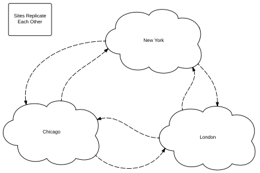
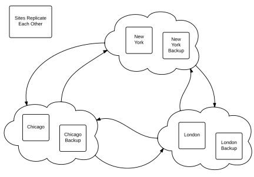
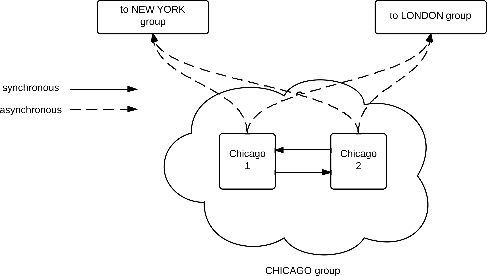

25. Replication and High Availability¶
This chapter discusses the support that AMPS provides for replication, and how AMPS features help to build systems that provide high availability.
Overview of AMPS High Availability¶
AMPS is designed for high performance, mission-critical applications. Those systems typically need to meet availability guarantees. To reach those availability guarantees, systems need to be fault tolerant. It’s not realistic to expect that networks will never fail, components will never need to be replaced, or that servers will never need maintenance. For high availability, you build applications that are fault tolerant: that keep working as designed even when part of the system fails or is taken offline for maintenance. AMPS is designed with this approach in mind. It assumes that components will occasionally fail or need maintenance, and helps you to build systems that meet their guarantees even when part of the system is offline.
When you plan for high availability, the first step is to ensure that each part of your system has the ability to continue running and delivering correct results if any other part of the system fails. You also ensure that each part of your system can be independently restarted without affecting the other parts of the system.
The AMPS server includes the following features that help ensure high availability:
- Transaction logging writes messages to persistent storage. In AMPS, the transaction log is not only the definitive record of what messages have been processed, it is also fully queryable by clients. Highly available systems make use of this capability to keep a consistent view of messages for all subscribers and publishers. The AMPS transaction log is described in detail in Chapter 13.
- Replication allows AMPS instances to copy messages between instances. AMPS replication is peer-to-peer, and any number of AMPS instances can replicate to any number of AMPS instances. Replication can be filtered by topic. By default, AMPS instances only replicate messages published to that instance. An AMPS instance can also replicate messages received via replication using passthrough replication: the ability for instances to pass replication messages to other AMPS instances.
- Heartbeat monitoring to actively detect when a connection is lost. Each client configures the heartbeat interval for that connection.
The AMPS client libraries include the following features to help ensure high availability:
Heartbeat monitoring to actively detect when a connection is lost. As mentioned above, the interval for the heatbeat is configurable on a connection-by-connection basis. The interval for heartbeat can be set by the client, allowing you to configure a longer timeout on higher latency connections or less critical operations, and a lower timeout on fast connections or for clients that must detect failover quickly.
Automatic reconnection and failover allows clients to automatically reconnect when disconnection occurs, and to locate and connect to an active instance.
Guaranteed publication from clients, including an optional persistent message store. This allows message publication to survive client restarts as well as server failover.
Subscription recovery and transaction log playback allows clients to recover the state of their messaging after restarts.
When used with a regular subscription or a sow and subscribe, the HAClient can restore the subscription at the point the client reconnects to AMPS.
When used with a bookmark subscription, the HAClient can provide the ability to resume at the point the client lost the connection. These features guarantee that clients receive all messages published in the order published, including messages received while the clients were offline. Replay and resumable subscription features are provided by the transaction log, as described in Chapter 13.
For details on each client library, see the developer’s guide for that library. Further samples can be found in the evaluation kit for the client, available from the 60East website at http://www.crankuptheamps.com/evaluate.
High Availability Scenarios¶
You design your high availability strategy to meet the needs of your application, your business, and your network. This section describes commonly-deployed scenarios for high availability.
Failover Scenario¶
One of the most common scenarios is for two AMPS instances to replicate
to each other. This replication is synchronous, so that both instances
persist a message before AMPS acknowledges the message to the publisher.
This makes a hot-hot pair. In the figure below, any messages published
to important_topic are replicated across instances, so both
instances have the messages for important_topic.
Notice that, because AMPS replication is peer-to-peer, clients can connect to either instance of AMPS when both are running. Further, messages can be published to either instance of AMPS and be replicated to the other instance. In this case, clients are configured with the addresses of both AMPS instances.
In this case, clients are configured with Instance 1 and Instance 2 as
equivalent server addresses. If a client cannot connect to one instance,
it tries the other. Because both instances contain the same messages for
important_topic, there is no functional difference in which instance
a client connects to. Because these instances replicate to each other,
AMPS can optimize this to a single connection. Two connections are shown
in the diagram to demonstrate the required configuration.
Because these instances are intended to be equivalent message sources
(that is – a client may fail over from one instance to another instance),
these instances are configured to use sync acknowledgement to publishers.
What that means is that, when a message is published to one of these instances,
that instance does not acknowledge the message to the publisher as persisted
until both instances have written the message to disk (although the message can
be delivered to subscribers once it is peristed locally).
Geographic Replication¶
AMPS is well suited for replicating messages to different regions, so clients in those regions are able to quickly receive and publish messages to a local instance. In this case, each region replicates all messages on the topic of interest to the other two regions. A variation on this strategy is to use a region tag in the content, and use content filtering so that each replicates messages intended for use in the other regions or worldwide.
For this scenario, an AMPS instance in each region replicates to an instance in the two other regions. For the best performance, replication between the regions is asynchronous, so that once an instance in one region has persisted the message, the message is acknowledged back to the publisher.
In this case, clients in each region connect only to the AMPS instance in that region. Bandwidth within regions is conserved, because each message is replicated once to the region, regardless of how many subscribers in that region will receive the message. Further, publishers are able to publish the message once to a local instance over a relatively fast network connection rather than having to publish messages multiple times to multiple regions.
To configure this scenario, the AMPS instances in each region are configured to forward messages to known instances in the other two regions.
Geographic Replication with High Availability¶
Combining the first two scenarios allows your application to distribute messages as required and to have high availability in each region. This involves having two or more servers in each region, as shown in the figure below.
Each region is configured as a group. Within each group, the instances
replicate to each other using sync acknowledgements, to ensure that
publishers can fail over between the instances. Because a client in a
given region does not connect to a server outside the region, we can
configure the replication links between the regions to use async
acknowledgement, which could potentially reduce the amount of time
that an application publishing to AMPS must store messages before receiving
acknowledgement that the messages are persisted.
The figure below shows the expanded detail of the configuration for these servers.
{kind=link}
The instances in each region are configured to be part of a group for that region. Within a region, the instances synchronously replicate to each other, and asynchronously replicate to instances at each remote site. The instances use the replication downgrade action to ensure that message publishing continues in the event that one of the instances goes offline. As with all connections where instances replicate to each other, this replication is configured as one connection in each direction, although AMPS may optimize this to a single replication connection.
Each instance at a site provides passthrough replication from the other sites to local instances, so that once a message arrives at the site, it is replicated to the other instances at the local site. The remote sites are configured in the same way. This configuration balances fault-tolerance and performance.
Each instance at a site replicates to the remote sites. The instance
specifies one Destination for each remote site, with the servers at
the remote site listed as failover equivalents for the remote site. With
the passthrough configuration, this ensures that each message is
delivered to each remote site exactly once. Whichever server at the
remote site receives the message distributes it to the other server
using passthrough replication.
With this configuration, publishers at each site publish to the primary
local AMPS instance, and subscribers subscribe to messages from their
local AMPS instances. Both publishers and subscribers use the high
availability features of the AMPS client libraries to ensure that if the
primary local instance AMPS fails, they automatically failover to the
other instance. Replication is used to deliver both high availability
and disaster recovery. In the table below, each row represents a
replication destination. Servers in brackets are represented as sets of
InetAddr elements in the Destination definition.
| Server | Destinations |
|---|---|
| Chicago 1 |
|
| Chicago 2 |
|
| NewYork 1 |
|
| NewYork 2 |
|
| London 1 |
|
| London 2 |
|
Table 25.1: Geographic Replication with HA Destinations
AMPS Replication¶
AMPS has the ability to replicate messages to downstream AMPS instances once those messages are stored to a transaction log. Replication in AMPS involves the configuration of two or more instances designed to share some or all of the published messages. Replication is an efficient way to split and share message streams between multiple sites where each downstream site may only want a subset of the messages from the upstream instances. Additionally, replication can be used to improve the availability of a set of AMPS instances by creating redundant instances for fail-over cases.
AMPS supports two forms of message acknowledgement for replication links:
synchronous and asynchronous; these settings control when publishers
of messages are sent persisted acknowledgments. These settings do not
affect when or how messages are replicated, or when or how messages are
delivered to subscribers unless a subscriber explicitly requests this
behavior. These settings only affect when AMPS acknowledges to the publisher
that the message has been persisted.
AMPS replication consists of a message stream (or, more precisely, a
command stream) provided to downstream instances. AMPS replicates
the messages produced as a result of publish and delta_publish
and replicates sow_delete commands. AMPS does not
replicate messages produced internally by AMPS, such as the results of
Views or updates sent to a ConflatedTopic. When replicating
Queues, AMPS also uses the replication connection to send and receive
administrative commands related to queues, as described in the section
on Replicated Queues.
 |
60East recommends that any server that participates in replication and that accepts publishes be configured with at least one synchronous replication destination. |
Notice that when replicating the results of a delta_publish command and
publishes to a topic that provides preprocessing and enrichment, AMPS
replicates the fully processed and merged message – exactly the information
that is written to the local transaction log and sent to subscribers. AMPS does
not save the original command in the transaction log or replicate the original
command. Instead, AMPS stores the message produced by the command and replicates that
message.
Replication Basics¶
Before planning an AMPS replication topology, it can be helpful to understand the basics of how AMPS replication works. This section presents a general overview of the concepts that are discussed in more detail in the following sections.
- Replication is point-to-point. Each replication connection involves exactly two AMPS instances: a source (that provides messages) and a destination that receives messages.
- Replication is always “push” replication. In AMPS, the source configures a destination, and pushes messages to that destination. (Notice that it is possible to configure the source to wait for the destination to connect, but replication is still a “push” from the source to the destination once that connection is made).
- Replication provides a command stream. In AMPS replication, the server
replicates the results of
publish,delta_publishandsow_deletecommands once those results are written to the transaction log. Each individual command is replicated, for low latency and fine-grained control of what is replicated. - Replication is customizable by topic, message type, and content. AMPS can be configured to replicate the entire transaction log, or any subset of the transaction log. This makes it easy to use replication to populate view servers, test environments, or similar instances that require only partial views of the source data.
- Replication guarantees delivery. AMPS will not remove a journal file until all messages in that journal file have been replicated to, and acknowledged by, every destination.
- Replication is composable. AMPS is capable of building a sophisticated replication topology by composing connections. For example, full replication between two servers is two point-to-point connections, one in each direction. The basic point-to-point nature of connections makes it easy to reason about a single connection, and the composable nature of AMPS replication allows you to build replication networks that provide data distribution and high availability for applications across data centers and around the globe.
- Replication acknowledgement is configurable, and the acknowledgement mode provides different guarantees: async acknowledgement provides durability guarantees for the local instance, whereas sync acknowledgement provides durability guarantees for both the local instance and the downstream instance.
This section discusses replication with those basics in mind.
Configuration¶
Replication configuration involves the configuration of two or more instances of AMPS. For testing purposes both instances of AMPS can reside on the same physical host before deployment into a production environment. When running both instances on one machine, the performance characteristics will differ from production, so running both instances on one machine is more useful for testing configuration correctness than testing overall performance.
 |
It’s important to make sure that when running multiple AMPS instances on the same host that there are no conflicting ports. AMPS will emit an error message and will not start properly if it detects that a port is already in use. |
For the purposes of explaining this example, we’re going to assume a
simple hot-hot replication case where we have two instances of
AMPS - the first host is named amps-1 and the second host is named
amps-2. Each of the instances are configured to replicate data to
the other. That is, all messages published to amps-1 are
replicated to amps-2 and vice versa. This configuration ensures that
a message published to one instance is available on the other instance in
the case of a failover (although, of course, the publishers and subscribers
in this should also be configured for failover).
We will first show the relevant portion of the configuration used in
amps-1, and then we will show the relevant configuration for
amps-2.
|
Every instance that participates in replication must have a
unique Name. |
|
All replication topics must also have a Transaction Log defined. The examples below omit the Transaction Log configuration for brevity. Please reference the Transaction Log chapter for information on how to configure a transaction log for a topic. |
<AMPSConfig>
<Name>amps-1</Name>
<Group>DataCenter-NYC-1</Group>
...
<Transports>
<Transport>
<!-- The amps-replication transport is required. This is a proprietary message format
used by AMPS to replicate messages between instances. This AMPS instance will
receive replication messages on this transport. The instance can receive
messages from any number of upstream instances on this transport. -->
<Name>amps-replication</Name>
<Type>amps-replication</Type>
<InetAddr>localhost:10004</InetAddr>
</Transport>
<!--
Transports for application use also need to
be defined. An amps-replication transport can
only be used for replication -->
... transports for client use here ...
</Transports>
...
<!-- All replication destinations are defined inside the Replication block. -->
<Replication>
<!--
Each individual replication destination defines messages being
replicated from this instance of AMPS to another instance of AMPS.
-->
<Destination>
<!-- The replicated topics and their respective message types are defined here. AMPS
allows any number of Topic definitions in a Destination. -->
<Topic>
<MessageType>fix</MessageType>
<!-- The Name definition specifies the name of the topic or topics to be replicated.
The Name option can be either a specific topic name or a regular expression that
matches a set of topic names. -->
<Name>orders</Name>
</Topic>
<Name>amps-2</Name>
<!-- The group name of the destination instance (or instances). The name specified
here must match the Group defined for the remote AMPS instance, or AMPS reports
an error and refuses to connect to the remote instance. -->
<Group>DataCenter-NYC-1</Group>
<!-- Replication acknowledgement can be either synchronoous or
asynchronous. This does not affect the speed or priority of
the connection, but does control when this instance will
acknowledge the message as safely persisted. -->
<SyncType>sync</SyncType>
<!-- The Transport definition defines the location to which this AMPS instance will
replicate messages. The InetAddr points to the hostname and port of the
downstream replication instance. The Type for a replication instance should
always be amps-replication. -->
<Transport>
<!-- The address, or list of addresses, for the replication destination. -->
<InetAddr>amps-2-server.example.com:10005</InetAddr>
<Type>amps-replication</Type>
</Transport>
</Destination>
</Replication>
...
</AMPSConfig>
Example 25.1: Configuration used for amps-1
For the configuration amps-2, we will use the following in
Example 25.2. While this example is similar, only the differences
between the amps-1 configuration will be called out.
<AMPSConfig>
<Name>amps-2</Name>
<Group>DataCenter-NYC-1</Group>
...
<!-- The amps-replication transport is required. This is a proprietary message format
used by AMPS to replicate messages between instances. This AMPS instance will
receive replication messages on this transport. The instance can receive
messages from any number of upstream instances on this transport. -->
<Transports>
<Transport>
<Name>amps-replication</Name>
<Type>amps-replication</Type>
<!-- The port where amps-2 listens for replication messages matches the port where
amps-1 is configured to send its replication messages. This AMPS instance will
receive replication messages on this transport. The instance can receive
messages from any number of upstream instances on this transport. -->
<InetAddr>10005</InetAddr>
</Transport>
</Transports>
...
<Replication>
<Destination>
<Topic>
<MessageType>fix</MessageType>
<Name>topic</Name>
</Topic>
<Name>amps-1</Name>
<Group>DataCenter-NYC-1</Group>
<SyncType>sync</SyncType>
<Transport>
<!-- The replication destination port for amps-2 is configured to send replication
messages to the same port on which amps-1 is configured to listen for them. -->
<InetAddr>amps-1-server.example.com:10004</InetAddr>
<Type>amps-replication</Type>
</Transport>
</Destination>
</Replication>
...
</AMPSConfig>
Example 25.2: Configuration for amps-2
These example configurations replicate the topic named topic of the message type nvfix
between the two instances of AMPS. To replicate more topics, these instances could add
additional topic blocks. A topic block can also specify a regular expression for the name
of the topic to replicate. In that case, AMPS will replicate any topic matching
the regular expression.
Automatic Configuration Validation¶
Replication can involve coordinating configuration among a large number of AMPS instances. It can sometimes be time consuming to ensure that all of the instances are configured correctly, and to ensure that a configuration change for one instance is also made at the replication destinations. For example, if a high-availability pair replicates the topics ORDERS, INVENTORY, and CUSTOMERS to a remote disaster recovery site, but the disaster recovery site only replicates ORDERS and INVENTORY back to the high-availability pair, disaster recovery may not occur as planned. Likewise, if only one member of the HA pair replicates ORDERS to the other member of the pair, the two instances will contain different messages, which could cause problems for the system.
Starting in the 5.0 release, AMPS automatic replication configuration validation makes it easier to keep configuration items consistent across a replication fabric.
Automatic configuration validation is enabled by default. You can turn
off validation for specific elements of the configuration when you
configure a Topic in the Destination. When validation is
enabled, AMPS verifies the configuration of a
remote instance when a replication conneciton is made. If the
configuration is not compatible with the source for one or more of the
validation checks, AMPS logs the incompatible configuration and
does not allow the connection.
Each Topic in a replication Destination can configure a unique
set of validation checks. By default, all of the checks apply to all
topics in the Destination.
When troubleshooting a replication configuration validation error, it is important to look at the AMPS logs on both sides of the connection. Typically, the AMPS instance that detects the error will log complete information as to which validation check failed and the changes required for the connection to succeed, while the other side of the connection will simply note that the connection failed validation. This means that if a validation error is reported on one instance, but details are not present, the other side of the connection detected the error, and will have logged relevant details.
The table below lists aspects of replication that AMPS validates. By default, replication
validation treats the downstream instance as though it is intended to be a
failover partner for this instance. For situations where that is not the case,
many validation rules can be excluded. For example, if the downstream instance is
a view server that does not accept publishes and should, therefore, not replicate
a particular topic back to this instance, the replicate validation check might
need to be excluded.
AMPS performs the following validation checks:
| Check | Validates |
|---|---|
txlog |
The topic is contained in the transaction log of the remote instance. |
replicate |
The topic is replicated from the remote instance back to this instance. |
sow |
If the topic is a SOW topic in this instance, it must also be a SOW topic in the remote instance. |
cascade |
The remote instance must enforce the same set of validation checks for this topic as this instance does. |
queue |
If the topic is a queue in this instance, it must also be a queue in the remote instance. This option cannot be excluded. |
keys |
If the topic is a SOW topic in this
instance, it must also be a SOW
topic in the remote instance and the
SOW in the remote instance must use
the same Key definitions. |
replicate_filter |
If this topic uses a replication filter, the remote instance must use the same replication filter for replication back to this instance. |
queue_passthrough |
If the topic is a queue in this instance, the remote instance must support passthrough from this group. |
queue_underlying |
If the topic is a queue in this instance, it must use the same underlying topic definition and filters in the remote instance. This option cannot be excluded. |
Table 25.2: Replication Configuration Validation
Notice that, by default, all of these checks are applied.
The sample below shows how to exclude validation checks for a replication
destination. In this sample, the Topic does not require the remote
destination to replicate back to this instance, and does not require that the
remote destination enforce the same configuration checks for any downstream
replication of this topic.
<Destination>
...
<Topic>
<MessageType>json</MessageType>
<Name>MyStuff-VIEW</Name>
<ExcludeValidation>replicate,cascade</ExcludeValidation>
</Topic>
...
</Destination>
Benefits of Replication¶
Replication can serve two purposes in AMPS. First, it can increase the fault-tolerance of AMPS by creating a spare instance to cut over to when an instance fails. Second, replication can be used in message delivery to a remote site.
In order to provide fault tolerance and reliable remote site message delivery, for the best possible messaging experience, there are some guarantees and features that AMPS has implemented. Those features are discussed below.
Replication in AMPS supports filtering by both topic and by message content. This granularity in filtering allows replication sources to have complete control over what messages are sent to their downstream replication instances.
Additionally, replication can improve availability of AMPS by creating a redundant instance of an AMPS server. Using replication, all of the messages which flow into an instance of AMPS can be replicated to one or more other instances. This way, if an instance should become unresponsive for any reason, applications can fail over to another instance to begin processing message streams and requests.
Sync vs Async¶
When publishing to a topic that is recorded in the transaction log, it
is recommended that publishers request a persisted acknowledgment
message response. The persisted acknowledgment message is one of
the ways in which AMPS guarantees that a message received by AMPS is
stored in accordance with the configuration. (The HAClient classes
in the AMPS client libraries automatically request this acknowledgment
on each publish command when a publish store is present.)
Depending on how AMPS is configured, that persisted acknowledgment
message will be delivered to the publisher at different times in the
replication process. There are two options: synchronous or
asynchronous. These two SyncType configurations control when
publishers of messages are sent persisted acknowledgments.
For synchronous replication acknowledgements, AMPS will not return a
persisted acknowledgment to the publisher for a message until the
message has been stored to the local transaction log, to the SOW, and
all downstream synchronous replication destinations have acknowledged
the message. Figure 25.1
shows the cycle of a message being published in a replicated instance, and the
persisted acknowledgment message being returned back to the publisher.
Notice that, with this configuration, the publisher will not recieve an
acknowledgment if the remote destination is unavailable. 60East
recommends that when you use sync replication, you also set a policy
for downgrading the link when a destination is offline, as described in
Automatically Downgrading an AMPS instance.
{kind=link}
Figure 25.1: Synchronous Persistence Acknowledgment
In asynchronous replication, the upstream AMPS instance sends the
persisted acknowledgment message back to the publisher as soon as
the message is stored in the local transaction log and SOW stores. The
upstream AMPS instance then sends the message to downstream replica
instances. Figure 25.2
shows the cycle of a message being published with a SyncType configuration set to asynchronous.
{kind=link}
Figure 25.2: Asynchronous Persistence Acknowledgment
By default, replication destinations do not affect when a message is delivered
to a subscription. A subscriber can optionally request the
fully_durable option on a bookmark subscription (that is, a replay from
the transaction log). When the fully_durable option is specified, AMPS does
not deliver a message to that subscriber until all replication destinations
configured for sync acknowledgement have acknowledged the message.
Replication Compression¶
AMPS provides the ability to compress the replication connnection. In typical use, using replication compression can greatly reduce the bandwidth required between AMPS instances.
The precise amount of compression that AMPS can achieve depends on the content of the replicated messages. Compression is configured at the replication source, and does not need to be enabled in the transport configuration at the instance receiving the replicated messages.
For AMPS instances that are receiving replicated messages, no additional configuration is necessary. AMPS automatically recognizes when an incoming replication connection uses compression.
Destination Server Failover¶
Your replication plan may include replication to a server that is part of a highly-available group. There are two common approaches to destination server failover.
Wide IP AMPS replication works transparently with wide IP, and many installations use wide IP for destination server failover. The advantage of this approach is that it requires no additional configuration in AMPS, and redundant servers can be added or removed from the wide IP group without reconfiguring the instances that replicate to the group. A disadvantage to this approach is that failover can require several seconds, and messages are not replicated during the time that it takes for failover to occur.
AMPS failover AMPS allows you to specify multiple downstream
servers in the InetAddr element of a destination. In this case, AMPS
treats the set list of servers as a list of equivalent servers, listed
in order of priority.
When multiple addresses are specified for a destination, each time AMPS needs to make a connection to a destination, AMPS starts at the beginning of the list and attempts to connect to each address in the list. If AMPS is unable to connect to any address in the list, AMPS waits for a timeout period, then begins again with the first server on the list. Each time AMPS reaches the end of the list without establishing a connection, AMPS increases the timeout period.
This capability allows you to easily set up replication to a highly-available group. If the server you are replicating to fails over, AMPS uses the prioritized list of servers to re-establish a connection.
Back Replication¶
Back Replication is a term used to describe a replication scenario
where there are two instances of AMPS – termed AMPS-A and AMPS-B
for this example.
In a back replication configuration, messages that are published to AMPS-A
are replicated to AMPS-B. Likewise, messages which are published to
AMPS-B are replicated to AMPS-A. This replication scheme is used
when both instances of AMPS need to be in sync with each other to handle
a failover scenario with no loss of messages between them. This way, if
AMPS-A should fail at any point, applications can immediately fail over
to the AMPS-B instance, allowing message flow to resume with as little
downtime as possible.
When configuring a set of instances for failover, it is important that
the instances use sync message acknowledgement among the set of
instances that a given client will consider for failover. It should never be
possible for a publisher to fail over from one instance to another instance
if the replication link between those instances is configured for async
acknowledgements.
Starting with the 5.0 release, when AMPS detects back replication between a pair of instances, AMPS will prefer using a single network connection between the servers, replicating messages in both directions over the single connection. This is particularly useful for situations where you need to have messages replicated, but only one server can initiate a connection: for example, when one of the servers is in a DMZ, and cannot make a connection to a server within the company. AMPS also allows you to specify a replication destination with no InetAddr provided: in this case, the instance will replicate once the destination establishes a destination, but will not initiate a connection. When both instances specify an InetAddr, AMPS may temporarily create two connections between the instances while replication is being established. In this case, after detecting that there are two connections active, AMPS will close one of the network connections and allow both AMPS instances to use the remaining network connection to publish messages to the other instance.
Passthrough Replication¶
Passthrough Replication is a term used to describe the ability of an AMPS instance to pass along replicated messages to another AMPS instance. This allows you to easily keep multiple failover or DR destinations in sync from a single AMPS instance. Unless passthrough replication is configured, an AMPS instance only replicates messages published to that instance.
Passthrough replication uses the name of the originating AMPS group to indicate that messages that arrive from that group are to be replicated to the specified destination. Passthrough replication supports regex server groups, and allows multiple server groups per destination. Notice that if the destination instance does not specify a group, the name of the instance is the name of the group.
<Replication>
<Destination>
<Name>AMPS2-HKG</Name>
<!-- No group specified: this destination is for
a server at the same site, and is responsible for
populating the specific replication partner. -->
<Transport>
<Name>amps-replication</Name>
<Type>amps-replication</Type>
<InetAddr>secondaryhost:10010</InetAddr>
</Transport>
<Topic>
<Name>/rep_topic</Name>
<MessageType>fix</MessageType>
</Topic>
<Topic>
<Name>/rep_topic2</Name>
<MessageType>fix</MessageType>
</Topic>
<SyncType>sync</SyncType>
<!-- Specify which messages received via replication will be replicated
to this destination (provided that the Topic and MessageType also match).
This destination will receive messages that arrive via replication from
AMPS instances with a group name that begins with NYC. Replicated messages
from an instance that is not in a group that matches ^NYC will not be
sent to this destination.
Regardless of the PassThrough configuration, all messages published directly
to this instance by an AMPS client will be replicated to this destination
if the Topic and MessageType match.
-->
<PassThrough>^NYC</PassThrough>
</Destination>
</Replication>
When a message is eligible for passthrough replication, topic and content filters in the replication destination still apply. The passthrough directive simply means that the message is eligible for replication from this instance if it comes from an instance in the specified group.
AMPS protects against loops in passthrough replication by tracking the instance names or group names that a message has passed through. AMPS does not allow a message to travel through the same instance or group more than once.
|
When using passthrough, AMPS does not allow a message to pass through the same instance name or group name more than once, to protect against replication loops. |
If an instance replicates a queue, it must also provide passthrough for any incoming replication group that replicates that queue (even if the incoming replication connection is from the same group that this instance belongs to). The reason for this is simple: AMPS must ensure that messages for a replicated queue, including acknowledgements and transfer messages, are able to reach every instance that hosts the queue if possible, even if a network connection fails or an instance goes offline. Therefore, this instance must passthrough messages received from other instances that affect the queue.
Guarantees on ordering¶
For each publisher, on a single topic, AMPS is guaranteed to deliver messages to subscribers in the same order that the messages were published by the original publisher. This guarantee holds true regardless of how many publishers or how many subscribers are connected to AMPS at any one time.
For each instance, AMPS is guaranteed to deliver messages in the order in which the messages were received by the instance, regardless of whether a message is received directly from a publisher or indirectly via replication. The message order for the instance is recorded in the transaction log, and is guaranteed to remain consistent across server restarts.
These guarantees mean that subscribers will not spend unnecessary CPU cycles checking timestamps or other message content to verify which message is the most recent, or reordering messages during playback. This frees up subscriber resources to do more important work.
AMPS preserves an absolute order across topics for a single subscription for all topics except views, queues, and conflated topics. Applications often rely on this behavior to correlate the times at which messages to different topics were processed by AMPS. See Message Ordering for more information.
Automatically Downgrading an AMPS instance¶
The AMPS administrative console provides the ability to downgrade a replication link from synchronous to asynchronous acknowledgement. This feature is useful to relieve memory or storage pressure on publishers should a downstream AMPS instance prove unstable, unresponsive, or be experiencing excessive latency.
Downgrading a replication link to asynchronous means that any
persisted acknowledgment message that a publisher may be waiting on
will no longer wait for the downstream instance to confirm the message
as persisted. AMPS immediately considers the downstream instance to have
acknowledged every message that has been sent to that instance, which means
that if AMPS was waiting for acknowledgment from that instance to deliver
a persisted acknowledgment, AMPS immediately sends the persisted
acknowledgment when the instance is downgraded.
AMPS can be configured to automatically downgrade a replication link to
async acknowledgement if the remote side of the link cannot keep up with
persisting messages or becomes unresponsive. This option prevents
unreliable links from holding up publishers, but increases the chances
of a single instance failure resulting in message loss, as described
above. AMPS can also be configured to automatically upgrade a
replication link that has previously been downgraded.
Automatic downgrade is implemented as an AMPS action. To configure automatic downgrade, add the appropriate action to the configuration file as shown below:
<AMPSConfig>
...
<Actions>
<Action>
<On>
<Module>amps-action-on-schedule</Module>
<Options>
<!--This option determines how often AMPS checks whether destinations have fallen
behind. In this example, AMPS checks destinations every 15 seconds. In most
cases, 60East recommends setting this to half of the Interval setting. -->
<Every>15s</Every>
</Options>
</On>
<Do>
<Module>amps-action-do-downgrade-replication</Module>
<Options>
<!--The maximum amount of time for a destination to fall behind. If AMPS has been
waiting for an acknowledgment from the destination for longer than the
Interval, AMPS downgrades the destination. In this example, AMPS downgrades any
destination for which an acknowledgment has taken longer than 60 seconds. -->
<Age>60s</Age>
</Options>
</Do>
<Do>
<Module>amps-action-do-upgrade-replication</Module>
<Options>
<!-- The threshold for upgrading the replication link back to sync
acknowledgement. If the destination is behind by less than this
amount, and was previously downgraded to async acknowledgement,
AMPS will upgrade to sync acknowledgement.
Notice that the upgrade threshold is not the same value as
the downgrade threshold. This is to prevent the connection
from repeatedly upgrading and downgrading if the age of the
oldest unacknowledged message for this destination is consistently
close to the threshold value.
-->
<Age>10s</Age>
</Options>
</Do>
</Action>
</Actions>
...
</AMPSConfig>
In this configuration file, AMPS checks every 15 seconds to see if a
destination has fallen behind by 60 seconds. This helps to guarantee
that a destination will never exceed the Interval, even in
situations where the destination begins falling behind exactly at the
time AMPS checks for the destination keeping up.
Replication Security¶
AMPS allows authorization and entitlement to be configured on replication destinations. For the instance that receives connections, you simply configure Authentication and Entitlement for the transport definition for the destination, as shown below:
<Transports>
<Transport>
<Name>amps-replication</Name>
<Type>amps-replication</Type>
<InetAddr>10005</InetAddr>
<!-- Specifies the entitlement module to use to check permissions for incoming
connections. The module specified must be defined in the Modules section of the
config file, or be one of the default modules provided by AMPS. This snippet
uses the default module provided by AMPS for example purposes. -->
<Entitlement>
<Module>amps-default-entitlement-module</Module>
</Entitlement>
<!-- Specifies the authorization module to use to verify identity for incoming
connections. The module specified must be defined in the Modules section of the
config file, or be one of the default modules provided by AMPS. This snippet
uses the default module provided by AMPS for example purposes. -->
<Authentication>
<Module>amps-default-authentication-module</Module>
</Authentication>
</Transport>
...
</Transports>
For incoming connections, configuration is the same as for other types of transports.
For connections from AMPS to replication destinations, you can configure an Authenticator module for the destination transport. Authenticator modules provide credentials for outgoing connections from AMPS. For authentication protocols that require a challenge and response, the Authenticator module handles the responses for the instance requesting access.
<Replication>
<Destination>
<Topic>
<MessageType>fix</MessageType>
<Name>topic</Name>
</Topic>
<Name>amps-1</Name>
<SyncType>async</SyncType>
<Transport>
<InetAddr>amps-1-server.example.com:10004</InetAddr>
<Type>amps-replication</Type>
<!-- Specifies the authenticator module to use to provide credentials for the
outgoing connection. The module specified must be defined in the Modules section
of the config file, or be one of the default modules provided by AMPS. This
snippet uses the default module provided by AMPS for example purposes. -->
<Authenticator>
<Module>amps-default-authenticator-module</Module>
</Authenticator>
</Transport>
</Destination>
</Replication>
Maximum downstream destinations¶
AMPS has support for up to 64 synchronous downstream replication instances and unlimited asynchronous destinations.
High Availability¶
AMPS High Availability, which includes multi-site replication and the transaction log, is designed to provide long uptimes and speedy recovery from disasters. Replication allows deployments to improve upon the already rock-solid stability of AMPS. Additionally, AMPS journaling provides the persisted state necessary to make sure that client recovery is fast, painless, and error free.
Guaranteed Publishing¶
An interruption in service while publishing messages could be disastrous if the publisher doesn’t know which message was last persisted to AMPS. To prevent this from happening, AMPS has support for guaranteed publishing.
With guaranteed publishing, the AMPS client library is responsible for retaining and retransmitting the message until the server acknowledges that the message has successfully been persisted to the server and has been acknowledged as persisted by any replication destinations that are configured for synchronous replication. This means that each message always has at least one part of the system (either the client library or the AMPS server) responsible for persisting the message, and if failover occurs, that part of the system can retain and recover the message as necessary.
An important part of guaranteed publishing is to be able to uniquely identify
messages. In AMPS, the unique identifier for a message is a bookmark, which
is formed from a combination of a number derived from the client name and
a sequence number managed by the client. A sequence number is simply an
ever-increasing number assigned by a publisher to any operation that
changes the state of persistent storage in AMPS (that is, publish or
sow_delete commands).
The AMPS clients automatically manage sequence numbers when applications
use the named methods or the Command interface. The libraries set the
sequence number on each published message, ensure that the sequence number
increases as appropriate, and initialize the sequence number at logon
using information retrieved from the server acknowledgment of the logon
command. The sequence number is also used for acknowledgments. The
persisted acknowledgment returned in response to a
publish command contains the sequence number of last message persisted
rather than the CommandId of the publish command message (for more details see Ack Conflation).
The logon command supports a processed acknowledgment message,
which will return the Sequence of the last record that AMPS has
persisted. When the processed acknowledgment message is returned to
the publisher, the Sequence corresponds to the last message
persisted by AMPS. The publisher can then use that sequence to determine
if it needs to 1) re-publish messages that were not persisted by AMPS,
or 2) continue publishing messages from where it left off. Acknowledging
persisted messages across logon sessions allows AMPS to guarantee
publishing. The HAClient classes in the AMPS clients manage sequence
numbers, including setting a meaningful initial sequence number based on
the response from the logon command, automatically.
|
It is recommended as a best practice that all publishers request
a processed acknowledgment message with every logon
command. This ensures that the Sequence returned in the
acknowledgment message matches the publisher’s last published
message. The 60East AMPS clients do this automatically when
using the named logon methods. If you are building the command
yourself or using a custom client, you may need to add this
request to the command yourself. |
In addition to the acknowledgment messages, AMPS also keeps track of the
published messages from a client based on the client’s name. The client
name is set during the logon command, so to set a consistent client
name, it is necessary for an application to log on to AMPS. A logon is
required by default in AMPS versions 5.0 and later, and optional by
default in AMPS versions previous to 5.0.
 |
All publishers must set a unique client name field when logging on to AMPS. This allows AMPS to correlate the sequence numbers of incoming publish messages to a specific client, which is required for reliable publishing, replication, and duplicate detection in the server. In the event that multiple publishers have the same client name, AMPS can no longer reliably correlate messages using the publish sequence number and client name. When a transaction log is enabled for AMPS, it is an error for two clients to connect to an instance with the same name. |
Durable Publication and Subscriptions¶
The AMPS client libraries include features to enable durable subscription and durable publication. In this chapter we’ve covered how publishing messages to a transaction log persists them. We’ve also covered how the transaction log can be queried (subscribed) with a bookmark for replay. Now, putting these two features together yields durable subscriptions.
A durable subscriber is one that receives all messages published to a topic (including a regular expression topic), even when the subscriber is offline. In AMPS this is accomplished through the use of the bookmark subscription on a client.
Implementation of a durable subscription in AMPS is accomplished on the client by persisting the last observed bookmark field received from a subscription. This enables a client to recover and resubscribe from the exact point in the transaction log where it left off.
A durable publisher maintains a persistent record of messages published
until AMPS acknowledges that the message has been persisted.
Implementation of a durable publisher in AMPS is accomplished on the
client by persisting outgoing messages until AMPS sends a persisted
acknowledgment that says that this message, or a later message, has
been persisted. At that point, the publishers can remove the message
from the persistent store. Should the publisher restart, or should AMPS
fail over, the publisher can re-send messages from the persistent store.
AMPS uses the sequence number in the message to discard any duplicates.
This helps ensure that no messages are lost, and provides
fault-tolerance for publishers.
The AMPS C++, Java, C# and Python clients each provide different implementation of persistent subscriptions and persistent publication. Please refer to the High Availability chapter of the Client Development Guide for the language of your choice to see how this feature is implemented.
Heartbeat in High Availability¶
Use of the heartbeat feature allows your application to quickly recover from detected connection failures. By default, connection failure detection occurs when AMPS receives an operating system error on the connection. This system may result in unpredictable delays in detecting a connection failure on the client, particularly when failures in network routing hardware occur, and the client primarily acts as a subscriber.
The heartbeat feature of the AMPS server and the AMPS clients allows connection failure to be detected quickly. Heartbeats ensure that regular messages are sent between the AMPS client and server on a predictable schedule. The AMPS server assumes disconnection has occurred if these regular heartbeats cease, ensuring disconnection is detected in a timely manner.
Heartbeats are initialized by the AMPS client by sending a heartbeat
message to the AMPS server. To enable heartbeats in your application,
refer to the High Availability chapter in the Developer Guide for your
specific client language.
Slow Client Management and Capacity Limits¶
AMPS provides the ability to manage memory consumption for clients to prevent slow clients, or clients that require large amounts of state, to disrupt service to the instance.
Sometimes, AMPS can publish messages faster than an individual client can consume messages, particularly in applications where the pattern of messages includes “bursts” of messages. Clients that are unable to consume messages faster or equal to the rate messages are being sent to them are “slow clients”. By default, AMPS queues messages for a slow client in memory to grant the slow client the opportunity to catch up. However, scenarios may arise where a client can be over-subscribed to the point that the client cannot consume messages as fast as messages are being sent to it. In particular, this can happen with the results of a large SOW query, where AMPS generates all of the messages for the query much faster than the network can transmit the messages.
Some features, such as conflated subscriptions, aggregated subscriptions and pagination require AMPS to buffer messages in memory for extended periods of time. Without a way to set limits on memory consumption, subscribers using these features could cause AMPS to exceed available memory and reduce performance or exit.
Memory capacity limits, typically called slow client management, are one of the ways that AMPS prevents slow clients, or clients that consume large amounts of memory, from disrupting service to other clients connected to the instance. 60East recommends enabling slow client management for instances that serve high message volume or are mission critical.
There are two methods that AMPS uses for managing slow clients to minimize the effect of slow clients on the AMPS instance:
- Client offlining. When client offlining occurs, AMPS buffers the messages for that client to disk. This relieves pressure on memory, while allowing the client to continue processing messages.
- Disconnection. When disconnection occurs, AMPS closes the client
connection, which immediately ends any subscriptions, in-progress
sowqueries, or other commands from that client. AMPS also removes any offlined messages for that client.
AMPS provides resource pool protection, to protect the capacity of the instance as a whole, and client-level protection, to identify unresponsive clients.
Resource Pool Policies¶
AMPS uses resource pools for memory and disk consumption for clients. When the memory limit is exceeded, AMPS chooses a client to be offlined. When the disk limit is exceeded, AMPS chooses a client to be disconnected.
When choosing which client will be offlined or disconnected, AMPS identifies the client that uses the largest amount of resources (memory and/or disk). That client will be offlined or disconnected. The memory consumption calculated for a client includes both buffered messages and memory used to support features such as conflated subscriptions and aggregated subscriptions.
AMPS allows you to use a global resource pool for the entire instance, a resource pool for each transport, or any combination of the two approaches. By default, AMPS configures a global resource pool that is shared across all transports. When an individual transport specifies a different setting for a resource pool, that transport receives an individual resource pool. For example, you might set high resource limits for a particular transport that serves a mission-critical application, allowing connections from that application to consume more resources than connections for less important applications.
The following table shows resource pool options for slow client management:
| Element | Description |
|---|---|
MessageMemoryLimit |
The total amount of memory to allocate to messages before offlining clients. Default: 10% of total host memory or
10% of the amount of host memory
AMPS is allowed to consume (as
reported by |
MessageDiskLimit |
The total amount of disk space to allocate to messages before disconnecting clients. Default: 1GB or the amount specified in the MessageMemoryLimit, whichever is highest. |
MessageDiskPath |
The path to use to write offline files. Default: |
Table 25.3: Slow Client: Resource Pool Policies
Individual Client Policies¶
AMPS also allows you to set policies that apply to individual clients. These policies are applied to clients independently of the instance level policies. For example, a client that exceeds the capacity limit for an individual client will be disconnected, even if the instance overall has enough capacity to hold messages for the client.
As with the Resource Pool Policies, Transports can either use instance-level settings or create settings specific to that transport.
The following table shows the client level options for slow client management:
| Element | Description |
|---|---|
ClientMessageAgeLimit |
The maximum amount of time for the
client to lag behind. If a message
for the client has been held longer
than this time, the client will be
disconnected. This parameter is an
AMPS time interval (for example,
Default: No age limit |
ClientMaxCapacity |
The amount of available capacity a
single client can consume. Before a
client is offlined, this limit
applies to the
Default: |
Table 25.4: Slow Client: Individual Client Policies
Client offlining can require careful configuration, particularly in situations where applications retrieve large result sets from SOW queries when the application starts up. More information on tuning slow client offlining for AMPS is available in Slow Client Offlining for Large Result Sets.
Configuring Slow Client Offlining¶
<AMPSConfig>
...
<MessageMemoryLimit>10GB</MessageMemoryLimit>
<MessageDiskPath>/mnt/fastio/AMPS/offline</MessageDiskPath>
<ClientMessageAgeLimit>30s</ClientMessageAgeLimit>
...
<Transports>
<!-- This transport shares the 10GB MessageMemoryLimit
defined for the instance. -->
<Transport>
<Name>regular-json-tcp</Name>
<Type>tcp</Type>
<InetAddr>9007</InetAddr>
<MessageType>json</MessageType>
</Transport>
<!-- This transport shares the 10GB MessageMemoryLimit
defined for the instance. -->
<Transport>
<Name>regular-bson-tcp</Name>
<Type>tcp</Type>
<InetAddr>9010</InetAddr>
<MessageType>bson</MessageType>
<!-- However, this transport does not allow clients to fall as far behind as the
instance-level setting -->
<ClientMessageAgeLimit>15s</ClientMessageAgeLimit>
</Transport>
<!-- This transport has a separate 35GB MessageMemoryLimit
and a 70GB MessageDiskLimit. It uses the instance-wide
30s parameter for the ClientMessageAgeLimit -->
<Transport>
<Name>highpri-json-tcp</Name>
<Type>tcp</Type>
<InetAddr>9995</InetAddr>
<MessageType>json</MessageType>
<MessageMemoryLimit>35GB</MessageMemoryLimit>
<MessageDiskLimit>70GB</MessageDiskLimit>
</Transport>
</Transports>
</AMPSConfig>
Message Ordering and Replication¶
AMPS uses the name of the publisher and the sequence number assigned by the publisher to ensure that messages from each publisher are published in order. However, AMPS does not enforce order across publishers. This means that, in a failover situation, that messages from different publishers may be interleaved in a different order on different servers, even though the message stream from each publisher is preserved in order. Each instance preserves the order in which messages were processed by that instance, and enforces that order.
Replicated Queues¶
AMPS provides a unique approach to replicating queues. This approach is designed to offer high performance in the most common cases, while continuing to provide delivery model guarantees, resilience and failover in the event that one of the replicated instances goes offline.
When a queue is replicated, AMPS replicates the publish commands to
the underlying topic, the sow_delete commands that contain the
acknowledgment messages, and special queue management commands that are
internal to AMPS.
Queue Message Ownership¶
To guarantee that no message is delivered more than once, AMPS tracks ownership of the message within the network of replicated instances. When a message is first published to AMPS, the instance that receives the publish command owns the message. Although all replicated instances downstream instances record the publish command in their transaction logs, they do not provide the message to queue subscribers unless that instance owns the message.
Only one instance can own a message at any given time. To transfer ownership, an instance that does not currently own the message makes a request to the current message owner. The owning instance makes an explicit decision to transfer ownership, and replicates the transfer notification to all instances to which the queue topic is replicated.
The instance that owns a message will always deliver the message to a local subscriber if possible. This means that performance for local subscribers is unaffected by the number of downstream instances. However, this also means that if the local subscribers are keeping up with the message volume being published to the queue, the owning instance will never need to grant a transfer of ownership.
Downstream instances can request that the owner transfer ownership of a message.
A downstream instance will make this request if:
- The downstream instance has subscriptions for that topic with available backlog, and
- The amount of time since the message arrived at the instance is greater than the typical time between the replicated message arriving and the replicated acknowledgment arriving.
Notice that this approach is intended to minimize ungranted transfer requests. In normal circumstances, the typical processing time reflects the speed at which the local processors are consuming messages at a steady state. Downstream instances will only request messages that have been seen to exceed that time, indicating that the processors are not keeping up with the incoming message rate.
The instance that owns the message will grant ownership to a requesting instance if:
- The request is the first request received for this message, and
- There are no subscribers on the owning instance that can accept the message
When the owning instance grants the request, it logs the transfer in its transaction log and sends the transfer of ownership to all instances that are receiving replicated messages for the queue. When the owning instance does not grant the transfer of ownership, it takes no action.
Notice that your replication topology must be able to replicate acknowledgments to all instances that receive messages for the queue. Otherwise, an instance that does not receive the acknowledgments will not consider the messages to be processed. Replication validation can help to identify topologies that do not meet this requirement.
Failover and Queue Message Ownership¶
When an instance that contains a queue fails or is shut down, that instance is no longer able to grant ownership requests for the messages that it owns. By default, those messages become unavailable for delivery, since there is no longer a central coordination point at which to ensure that the messages are only delivered once.
AMPS provides a way to make those messages available. Through the admin
console, you can choose to enable_proxied_transfer, which allows an
instance to act as an ownership proxy for an instance that has gone
offline. In this mode, the local instance can assume ownership of
messages that is owned by an offline instance.
Use this setting with care: when active, it is possible for messages to be delivered twice if the instance that had previously owned the message comes back online, or if multiple instances have proxied transfer enabled for the same queue.
In general, you enable_proxied_transfer as a temporary recovery step
while one of the instances is offline, and then disable proxied transfer
when the instance comes back online, or when all of the messages owned
by that instance have been processed.
Configuration for Queue Replication¶
To provide replication for a distributed queue, AMPS requires that the replication configuration:
Provide bidirectional replication between the instances. In other words, if instance A replicates a queue to instance B, instance B must also replicate that queue to instance A.
If the topic is a queue on one instance, it must be a queue on all replicated instances.
On all replicated instances, the queue must use the same underlying topic definition and filters. For queues that use a regular expression as the topic definition, this means that the regular expression must be the same.
The underlying topics must be replicated to all replicated instances (since this is where the messages for the queue are stored).
Replicated instances must provide passthrough for instances that replicate queues. For example, consider the following replication topology: Instance A in group One replicates a queue to instance B in group Two. Instance B in group Two replicates the queue to instance C in group Three.
For this configuration, instance B must provide passthrough for group Three to instance A, and must also provide passthrough for group One to instance C. The reason for this is to ensure that ownership transfer and acknowledgment messages can reach all instances that maintain a copy of the queue.
Notice that the requirements above apply only to queue topics. If the underlying topic uses a different name than the queue topic, it is possible to replicate the messages from the underlying topic without replicating the queue itself. This approach can be convenient for simply recording and storing the messages provided to the queue on an archival or auditing instance. When only the underlying topic (or topics) are replicated, the requirements above do not apply, since AMPS does not provide queuing behavior for the underlying topics.
A queue defined with LocalQueue cannot be replicated. The data from
the underlying topics for the queue can be replicated without special
restrictions. The queue topic itself, however, cannot be replicated.
AMPS reports an error if any LocalQueue topic is replicated.